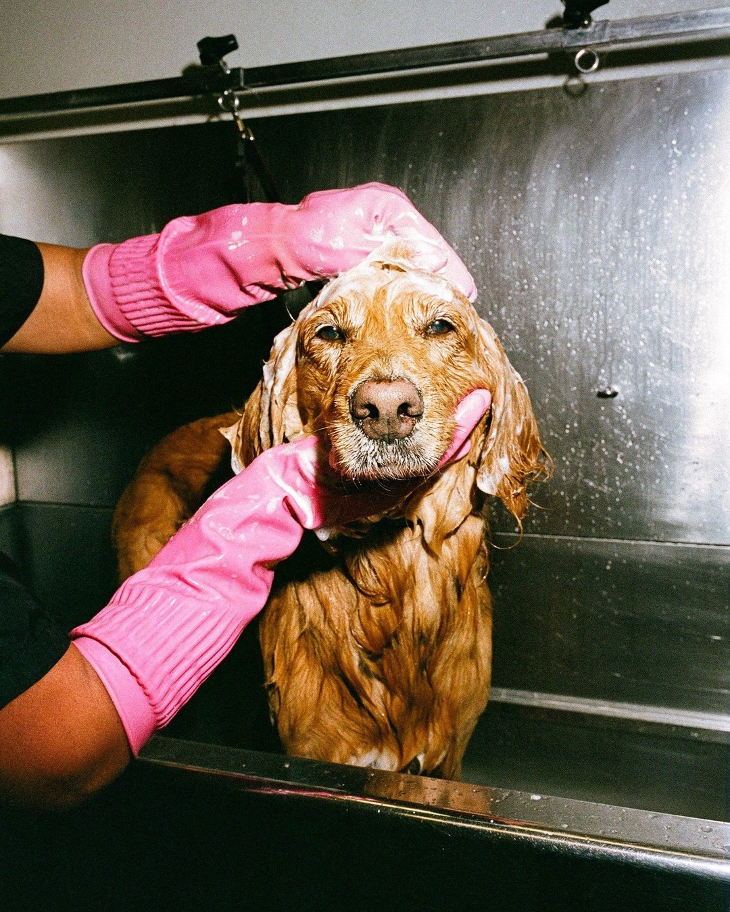
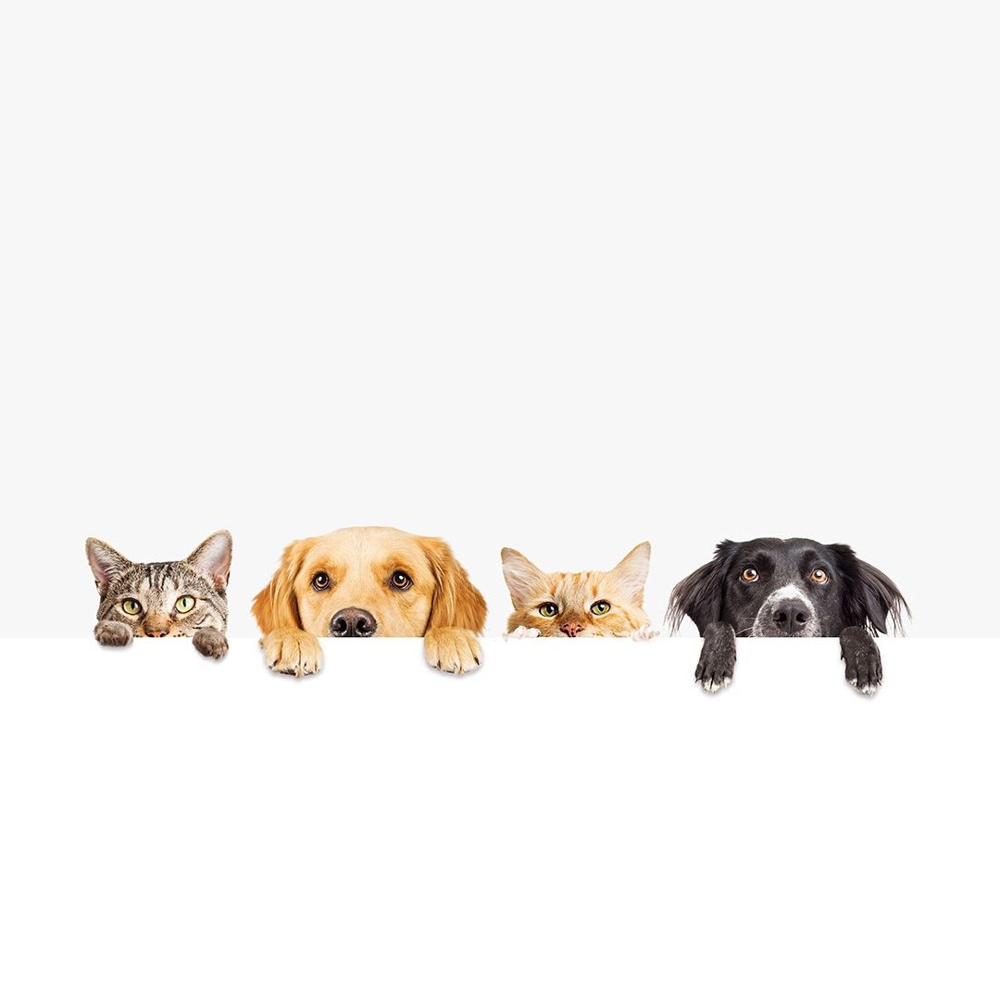
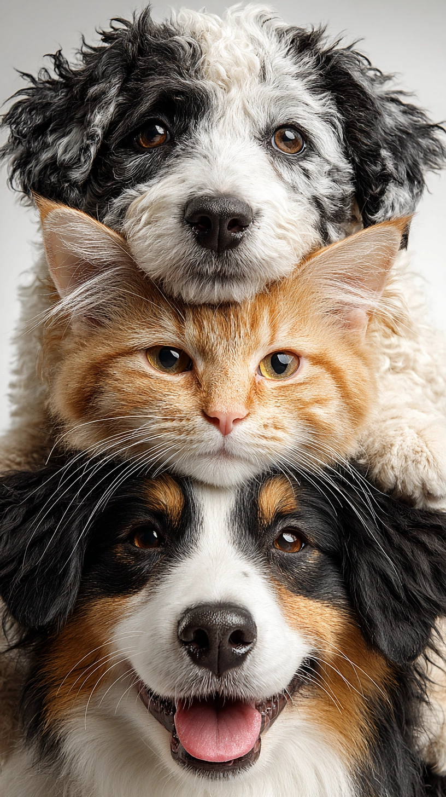

Charlie learned to trust.
A stable foster home and consistent routines helped Charlie build confidence and settle into family life.
Adoption and foster stories
Each successful placement is built on patience, consistent care, and a thoughtful match. These stories highlight the positive impact of adoption and fostering.
“Milo needed time to settle in. With patience and a consistent routine, he became a much-loved part of our family.” — The Jacobs family

“We began fostering for two weeks. Seeing her confidence grow helped us decide to make her adoption permanent.” — Naledi & Sam
More adoption stories

A stable foster home and consistent routines helped Charlie build confidence and settle into family life.

With consistent care and familiar routines, Luna became more confident and comfortable in her new home.
Daily walks and a supportive family helped Ollie settle into a secure and happy routine.
The right match considers an animal’s needs and a family’s circumstances.
A temporary home provides stability and individual attention while an animal awaits adoption.
Shared time, skills, and information help connect animals with care and potential homes.